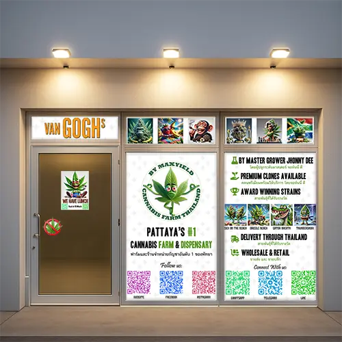

Grown by us
Indoor flowers are cultivated in-house, giving the team direct control over freshness, quality, and consistency.
Premium organic cannabis farm and dispensary near Jomtien
Organic, lab-tested flowers grown in-house at Maxyield Farm near Jomtien.

Why Maxyield
Maxyield Farm grows, selects, cures, and presents its own flowers with traceable care from cultivation to pickup.
Indoor flowers are cultivated in-house, giving the team direct control over freshness, quality, and consistency.
Grower-direct pricing keeps the experience transparent without random suppliers or inflated tourist markups.
Clean growing standards, careful nutrients, no pesticides, and a patient cure preserve aroma and character.
Master grower Johnny Dee oversees genetics, cultivation, and batch selection for the Maxyield menu.
Featured strains
Availability changes with each harvest. Contact the team for current batches, compliant purchase requirements, and pickup options.
Farm-to-shelf
Genetics are selected and prepared by the farm team.
Controlled indoor cultivation supports clean, consistent flowers.
Batches are checked, cured, and handled for aroma and quality.
Fresh flowers reach the Jomtien-area dispensary with direct farm traceability.
Visit or contact
453/82 Chaiyaphruek Rd, Banglamung, Pattaya, Chon Buri 20150, Thailand
Hours: 09:00-21:00 daily
Contact us to confirm current availability and compliant delivery options in Pattaya.
Google Maps and reviews
Open the Google profile for the latest rating, photos, directions, and customer reviews.
Customers frequently mention clean flowers, knowledgeable service, and grower-direct value.
View on Google Leave a ReviewReview themes highlight clean flower, fresh batches, and consistent presentation.
Visitors appreciate guidance from a team that knows the farm and its strains.
The Chaiyaphruek Road address is easy to open in Google Maps near Jomtien.
Member access
For regular customers who want early harvest updates, grower-direct deals, and a closer connection to the farm menu.
21+ only.
Use only according to current Thai law.
Prescription or medical consultation may be required.
No public consumption.
Do not export cannabis from Thailand.
Cannabis regulations in Thailand may change. Please contact us to confirm current legal purchase requirements and compliant delivery options.
FAQ
453/82 Chaiyaphruek Rd, Banglamung, Pattaya, Chon Buri 20150, Thailand, near Jomtien.
Maxyield Farm Dispensary is open daily from 09:00 to 21:00.
Our flowers are handled through a clean farm-to-shelf process with lab-tested quality controls and careful curing.
Yes. Maxyield focuses on organic cultivation standards, no pesticides, and careful in-house growing.
Cannabis regulations in Thailand may change. Customers should follow current Thai law and may need a valid medical prescription or consultation. Please contact us for current legal purchase requirements.
Contact us to confirm current availability and compliant delivery options in Pattaya.
Responsible access
Cannabis information on this website is intended only for adults. Please confirm your age before entering.